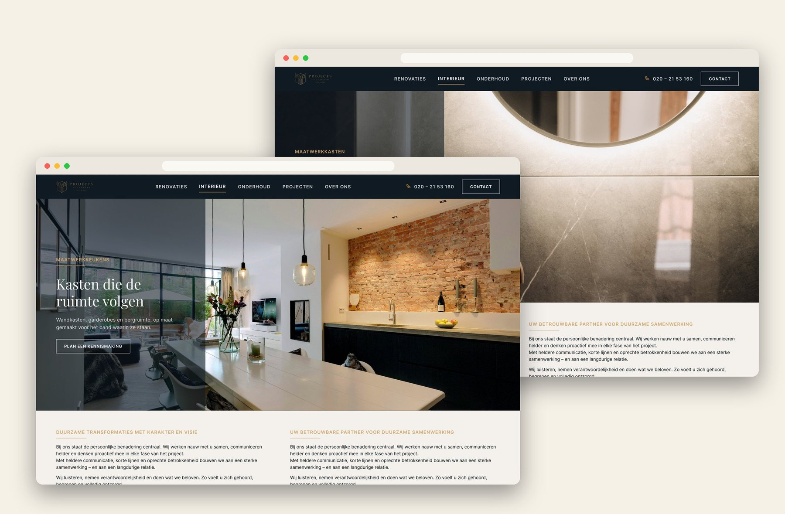
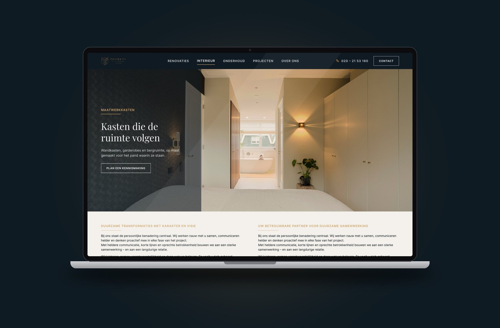

← All projects
Web design
Projects Amsterdam
Projects Amsterdam renovates, builds interiors and maintains property in Amsterdam. I designed service pages for their new website: quiet, navy and gold, with their own photography doing most of the talking.

the pages
One rhythm, every service.
Kitchens, bathrooms and wardrobes each get a page with the same rhythm: a full-width hero, a short intro, a four-step look at how they work, and one clear call to action.
